Show:
Synthetic turf – finished goods 2 items · 22,890 m² · 1 lot
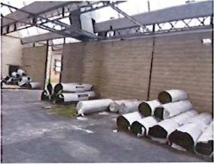
Actual photo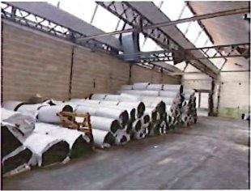
Actual photo Actual photo
Actual photo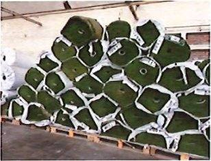
Product photoSynthetic turf rolls
Rouleaux de gazon synthétique 1 m x 30 m – listing 764 rouleaux (22 890 m²), déclaré premier choix, poussiéreux
764 rolls, each 1 m wide × 30 m long (≈ 30 m² per roll), finished goods declared first choice; dusty from storage. Pile height, yarn and backing specification on request.
Est. weight ≈ 37–60 t
22,890 m²Ref #84
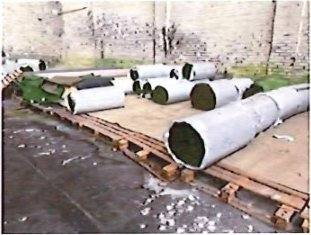
Site photoSynthetic turf – loose rolls
Rouleaux de gazon, produit fini deci delà (en 2 m ou 1 m)
Additional loose finished rolls in 1 m and 2 m width, various lengths.
Est. weight ≈ 1.0–3.0 t
1 lotRef #83
Spinning & yarn laboratory 9 items · 1,307 pcs
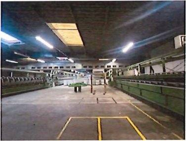
Actual photo Actual photo
Actual photo Actual photo
Actual photo Product photo
Product photoRing spinning frame with winder
Continu à filer NSC CF 53 SCHLUMBERGER n° 7233 de 1993 – 288 broches, double étirage, anneaux Ø 90, fuseau 400, fil Nm 4.5–10 + bobinoir KARL MAYER 18 têtes RC 10 VD 14 (1992) + épurateur LOEPFE MASTER
NSC / Schlumberger CF 53, year 1993: 288 spindles, double drafting, ring Ø 90 mm, 400 mm spindle, yarn count Nm 4.5–10 (coarse carpet yarns). Sold as a set with a Karl Mayer 18-head winder (1992) and a Loepfe yarn clearer.
Est. weight ≈ 6.0–9.0 t
1 pcsRef #51
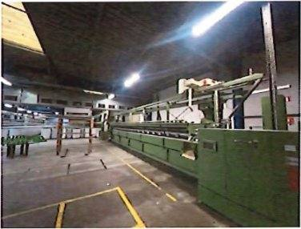
Product photoRing spinning frame with winder
Continu à filer NSC CF 53 SCHLUMBERGER n° 7234 de 1993 – même capacité + bobinoir KARL MAYER 18 têtes RC 10 VD n° 2615 (1992) + épurateur LOEPFE MASTER
Second identical frame (same specification as line 51) with its own Karl Mayer winder and Loepfe clearer.
Est. weight ≈ 6.0–9.0 t
1 pcsRef #52
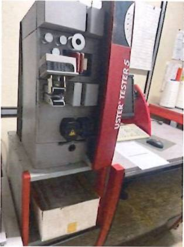
Product photoYarn evenness tester
Machine de test USTER TESTER 5 type UT5-5400, sensor CS, n° 410101-04200 de 2010 + tables
Uster Tester 5 (UT5-S400 series, CS sensor), year 2010, with tables – laboratory evenness / hairiness testing of slivers and yarns.
Est. weight ≈ 0.8–1.5 t
1 pcsRef #53
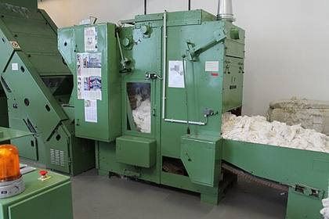
Representative photoFibre opener
Ouvreuse LAROCHE suspendue de 1984 n° 689401
Est. weight ≈ 1.0–2.0 t
1 pcsRef #57
Sliver cans (with spring)
Sliver cans (with spring)
Pots à ressorts pour rubans – capacité 3 000 m de ruban / 22 kg, H 1000 x Ø 700
Approx. 500 spring cans, 1,000 mm high × 700 mm diameter, 3,000 m / 22 kg sliver each.
Est. weight ≈ 5.0–7.0 t
500 pcsRef #55
Sliver cans (without spring)
Sliver cans (without spring)
Pots sans ressorts pour rubans
Approx. 800 cans without spring.
Est. weight ≈ 6.4–8.8 t
800 pcsRef #56
Platform scale
Platform scale
Balance plateau
Est. weight ≈ 0.0–0.1 t
1 pcsRef #54
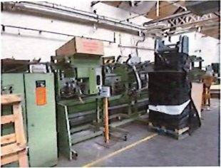
Site photoSpinning winder (Karl Mayer)
Machine laine peignée KARL MAYER (verte) de 1990 RC 10 VD n° 2339 – incomplet
Est. weight ≈ 1.0–2.0 t
1 pcsRef #35
Spinning winder (Karl Mayer)
Spinning winder (Karl Mayer)
Bobinoir vert remisé MAYER 1992 RC 10 VD n° 2619 – incomplet
Est. weight ≈ 0.8–1.5 t
1 pcsRef #36
Forklifts & material handling 11 items · 12 pcs
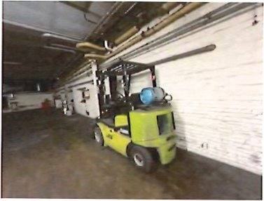
Site photoLPG forklift with bale clamp
Chariot élévateur CLARK thermique (gaz) avec pince à balles KAUP 2 T de 2019
Clark LPG forklift, year 2019, with Kaup bale clamp, 2 t.
Est. weight ≈ 3.2–3.8 t
1 pcsRef #44
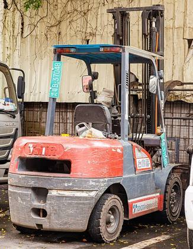
Representative photoLPG forklift
Chariot élévateur TOYOTA GF 18 thermique au gaz 1,5 T de 2015
Est. weight ≈ 2.6–3.0 t
1 pcsRef #40
LPG forklift
Chariot élévateur TOYOTA 25 SAS avec barre, au gaz, de 2003
Est. weight ≈ 3.5–4.2 t
1 pcsRef #41
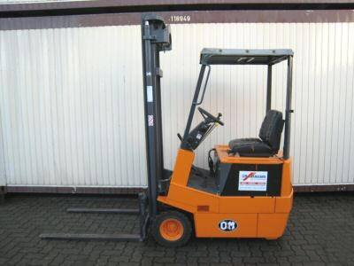
Representative photoElectric forklift
Chariot élévateur électrique CLARK vert, ancien modèle, bandages pleins + chargeur NORDYNE TS 4880
Est. weight ≈ 3.0–4.0 t
1 pcsRef #39
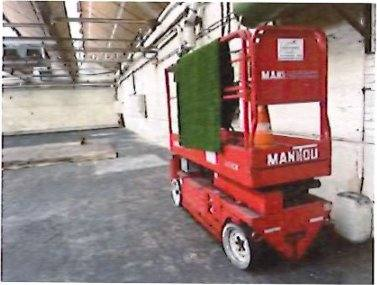
Product photoVertical mast lift
Nacelle élévatrice MANITOU 80 EX (Maniaccess), ancien modèle, déclarée en état
Est. weight ≈ 1.0–1.5 t
1 pcsRef #34
Mobile yard ramp
Mobile yard ramp
Rampe de chargement mobile STEIBLE ST 71 hydraulique de 2017
Est. weight ≈ 4.0–6.0 t
1 pcsRef #61
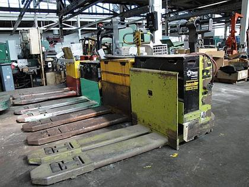
Representative photoElectric pallet truck
Petit transpalette électrique orange de 2022
Est. weight ≈ 0.1–0.3 t
1 pcsRef #46
Electric pallet truck
Transpalette électrique rouge FENWICK T 18 de 2001
Est. weight ≈ 0.8–1.2 t
1 pcsRef #48
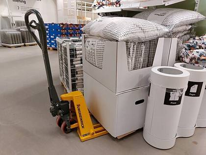
Representative photoHand pallet truck
2 transpalettes jaunes
Est. weight ≈ 0.1–0.2 t
2 pcsRef #47
Hand pallet truck
1 transpalette rouge
Est. weight ≈ 0.1 t
1 pcsRef #49
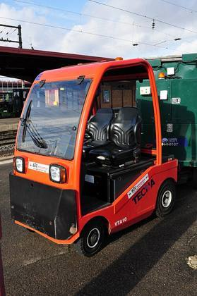
Representative photoElectric tow tractor
Ancien tracteur électrique d'atelier (HS)
Est. weight ≈ 0.5–1.0 t
1 pcsRef #37
Baling & packing 8 items · 9 pcs
Baling press
Baling press
Presse à balles GALICIA de 2007 n° 2430
Est. weight ≈ 3.0–6.0 t
1 pcsRef #43
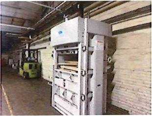
Site photoBaling press
Presse verticale SACRIA à balles SAM 20 de 1994
Est. weight ≈ 1.5–3.0 t
1 pcsRef #42
Baling press
Baling press
Presse verticale SACRIA à balles CHF 12 n° 1780 de 1986
Est. weight ≈ 1.2–2.5 t
1 pcsRef #58
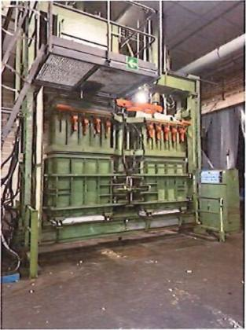
Product photoBaling press
Importante presse LVD 60 T de 1973, balles de 135 à 300 kg (ferraille)
LVD 60 t press, year 1973, bales of 135–300 kg (used for scrap).
Est. weight ≈ 8–15 t
1 pcsRef #63
Baling press
Baling press
Presse 1,5 T n° 332, ancien modèle
Est. weight ≈ 0.5–1.5 t
1 pcsRef #45
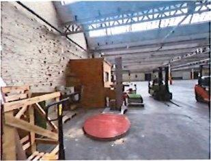
Site photoPallet stretch wrapper
Machine banderoleuse FILM 9 de 2019
Est. weight ≈ 0.5–0.8 t
1 pcsRef #38
Container tipper
Container tipper
2 importants videurs pour ferraille (verts)
Est. weight ≈ 0.6–1.2 t
2 pcsRef #64
Opener line (scrap value)
Opener line (scrap value)
Ligne ouvreuse TAMAFA et MACKIE Louparc, 1965/68 (pour ferraille)
Est. weight ≈ 4.0–8.0 t
1 pcsRef #62
Compressed air & utilities 6 items · 6 pcs
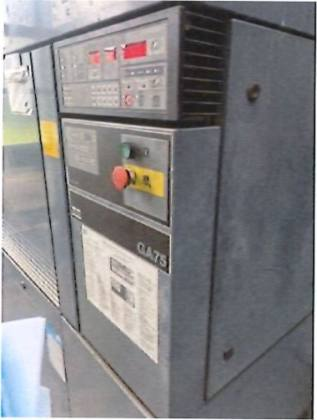
Site photoScrew compressor
Compresseur ATLAS COPCO GA 75, ancien modèle, 58 035 heures
Est. weight ≈ 1.5–2.0 t
1 pcsRef #12
Compressed-air dryer
Compressed-air dryer
Sécheur PARTENAIR ACT-EVO-660, récent (2018)
Est. weight ≈ 0.1–0.2 t
1 pcsRef #15
Air receiver tank
Air receiver tank
Cuve SECIM 2 000 litres (1981)
Est. weight ≈ 0.4–0.6 t
1 pcsRef #14
Stainless steel tank
Stainless steel tank
Cuve inox
Est. weight ≈ 0.2–0.5 t
1 pcsRef #65
Screw compressor
Screw compressor
Compresseur KAESER ASD 40, ancien modèle – problème de carte
Control board fault declared.
Est. weight ≈ 0.5–0.6 t
1 pcsRef #13
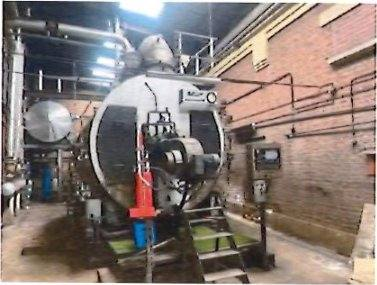
Product photoIndustrial boiler
Importante chaudière SELIM Automate (ancienne) avec bâche et accessoires – déclarée HS
Est. weight ≈ 4.0–8.0 t
1 pcsRef #11
Maintenance workshop & spare parts 16 items · 10 pcs · 6 lot
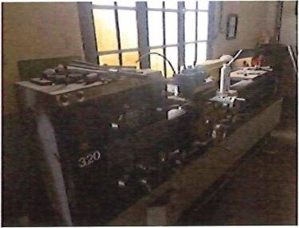
Product photoCentre lathe
Tour GALLIC 16-320, ancien modèle
Est. weight ≈ 1.5–2.5 t
1 pcsRef #27
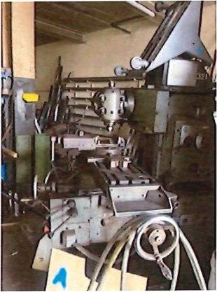
Site photoMilling machine
Fraiseuse DUFOUR, ancien modèle (vers 1965)
Est. weight ≈ 1.0–2.0 t
1 pcsRef #20
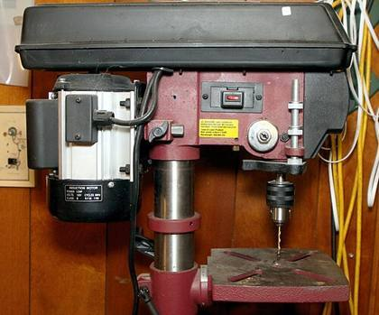
Representative photoBench drill
Perceuse d'établi
Est. weight ≈ 0.1–0.3 t
1 pcsRef #22
Bench drill
Très ancienne perceuse à poulies (milieu XXe)
Est. weight ≈ 0.1–0.3 t
1 pcsRef #23
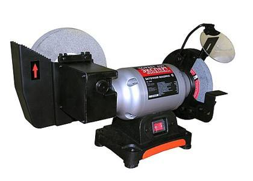
Representative photoBench grinder
Important touret à polir
Est. weight ≈ 0.1–0.3 t
1 pcsRef #24
Bench grinder
Important touret double MAPE, ancien modèle
Est. weight ≈ 0.1 t
1 pcsRef #25
Bench press
Bench press
Petite presse rouge d'établi, ancien modèle
Est. weight ≈ 0.1 t
1 pcsRef #18
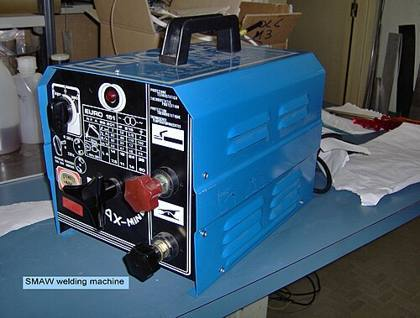
Representative photoWelding machine
Petit poste à souder de chantier, ancien modèle
Est. weight ≈ 0.0–0.1 t
1 pcsRef #21
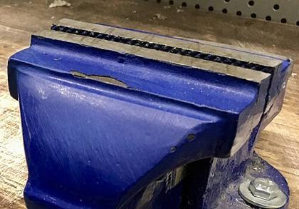
Representative photoWorkbench with vice
Grande longueur d'établis en bois avec étaux
Est. weight ≈ 0.3–0.8 t
1 lotRef #19
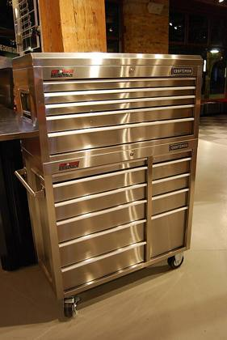
Representative photoTool cabinet
Armoires d'atelier en tôle bleue
Est. weight ≈ 0.2–0.5 t
1 lotRef #28
Tool cabinet
Casiers en métal
Est. weight ≈ 0.1 t
1 lotRef #26
Tool cabinet
Casier à trappes
Est. weight ≈ 0.0–0.1 t
1 pcsRef #30
Hand tools
Hand tools
Caisse à outils incomplète et divers
Est. weight ≈ 0.0–0.1 t
1 lotRef #29
Forge with hood
Forge with hood
Ancienne forge avec hotte
Est. weight ≈ 0.3–0.8 t
1 pcsRef #31
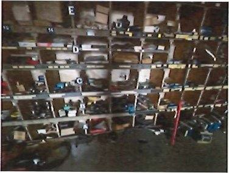
Site photoMetal shelving
Étagères en tôle grise
Est. weight ≈ 0.3–0.8 t
1 lotRef #60
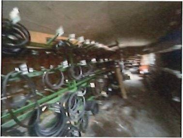
Product photoMachine spare parts
Nombreuses pièces détachées pour machines textiles : courroies, pièces métalliques et électriques, interrupteurs, poulies…
Large stock of spare parts for textile machines (belts, metal and electrical parts, switches, pulleys); old stock, partly for models no longer in use.
Est. weight ≈ 1.0–3.0 t
1 lotRef #77
Vehicle 1 items · 1 pcs
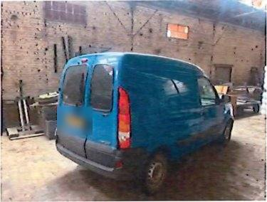
Product photoVan
RENAULT KANGOO (03/2008), 76 208 km
Renault Kangoo van, first registration 03/2008, 76,208 km.
Est. weight ≈ 1.2–1.3 t
1 pcsRef #74
Office 5 items · 4 pcs · 3 lot
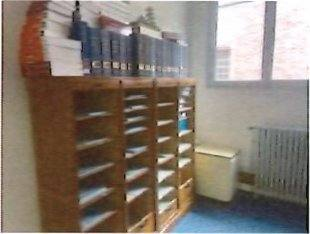
Site photoOffice cabinets & desk
Casier bois à 4 rideaux, 1 à 3 rideaux, 2 à 2 rideaux, perroquet, bureau administration bois
Est. weight ≈ 0.2–0.5 t
1 lotRef #2
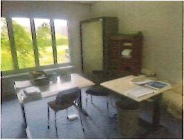
Site photoOffice furniture
Divers mobiliers courants : bureaux, tables, chaises – anciens modèles
Est. weight ≈ 0.3–0.8 t
1 lotRef #1
Safe
Safe
2 coffres-forts déclarés vides, sans clefs
No keys.
Est. weight ≈ 0.3–1.0 t
2 pcsRef #3
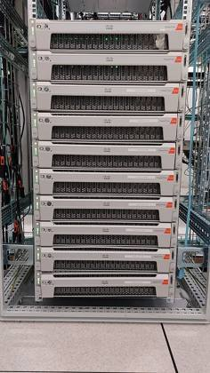
Representative photoServer rack
2 baies informatiques
Est. weight ≈ 0.1–0.2 t
2 pcsRef #4
IT equipment
IT equipment
Matériel informatique divers
Est. weight ≈ 0.1 t
1 lotRef #5
Pallets, packaging & scrap 12 items · 9 pcs · 9 lot · 4 pallets
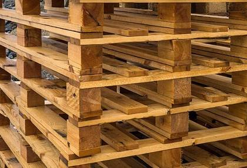
Representative photoWooden pallets
Fort lot de palettes, état moyen
Est. weight ≈ 1.0–3.0 t
1 lotRef #6
Wooden pallets
Palettes en bois en nombre
Est. weight ≈ 1.0–3.0 t
1 lotRef #67
Transport bins on castors
Transport bins on castors
Bacs de transport d'atelier sur roulettes (verts ou bordeaux)
Est. weight ≈ 0.3–0.8 t
1 lotRef #9
Transport bins on castors
Transport bins on castors
8 bacs verts à roulettes
Est. weight ≈ 0.1–0.2 t
8 pcsRef #50
Wire cages
Wire cages
Cages en métal
Est. weight ≈ 0.3–1.0 t
1 lotRef #66
Sample boxes
Sample boxes
Cartons d'échantillons (4 palettes)
Est. weight ≈ 0.4–1.0 t
4 palletsRef #7
Cardboard packaging
Cardboard packaging
Palettes de cartons plats d'emballage
Est. weight ≈ 0.3–1.0 t
1 lotRef #8
Cardboard packaging
Cardboard packaging
Cartons en palettes : boîtes américaines, intercalaires
Est. weight ≈ 0.3–1.0 t
1 lotRef #80
Big bags (FIBC)
Big bags (FIBC)
Sacs big bag vides d'occasion
Est. weight ≈ 0.1–0.2 t
1 lotRef #81
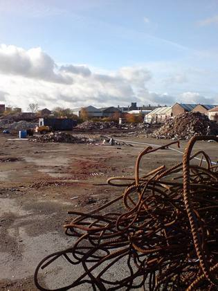
Representative photoScrap metal
Profilés en fer rouillés
Est. weight ≈ 0.5–2.0 t
1 lotRef #76
Scrap metal
Ferraille, profilés entamés
Est. weight ≈ 0.3–1.0 t
1 lotRef #78
Platform lift (scrap value)
Platform lift (scrap value)
Élévateur plateau bleu (ferraille)
Est. weight ≈ 0.3–0.8 t
1 pcsRef #68
Summary of contents
By completeness
| Status | Items | Quantity (pcs) | Share | Est. weight |
|---|---|---|---|---|
| First choice Finished goods declared first choice (dusty from storage). | 1 | 22,890 m² | – | ≈ 37–60 t |
| Loose / remnants Loose finished rolls of various widths and lengths. | 1 | 1 lot | – | ≈ 1.0–3.0 t |
| Used – as seen Used equipment, sold as seen, not individually tested. | 58 | 1,351 + 15 lot · 4 pallets | 99.5% | ≈ 71–119 t |
| Incomplete Machine declared incomplete. | 2 | 2 | 0.1% | ≈ 1.8–3.5 t |
| Declared defective Declared out of order or with a known fault. | 3 | 3 | 0.2% | ≈ 5.0–9.6 t |
| Spare parts Spare parts and components, not complete machines. | 1 | 1 lot | – | ≈ 1.0–3.0 t |
| Scrap value Old equipment or metal with scrap value only. | 4 | 2 + 2 lot | 0.1% | ≈ 5–12 t |
| Total | 70 | 1,358 + 22,890 m² · 19 lot · 4 pallets | 100% | ≈ 122–209 t |
By product type
| Product type | Items | Quantity (pcs) | Share | Est. weight |
|---|---|---|---|---|
| Sliver cans (without spring) | 1 | 800 | 58.9% | ≈ 6.4–8.8 t |
| Sliver cans (with spring) | 1 | 500 | 36.8% | ≈ 5.0–7.0 t |
| Transport bins on castors | 2 | 8 + 1 lot | 0.6% | ≈ 0.4–1.0 t |
| Baling press | 5 | 5 | 0.4% | ≈ 14–28 t |
| Hand pallet truck | 2 | 3 | 0.2% | ≈ 0.2 t |
| Ring spinning frame with winder | 2 | 2 | 0.1% | ≈ 12–18 t |
| Spinning winder (Karl Mayer) | 2 | 2 | 0.1% | ≈ 1.8–3.5 t |
| LPG forklift | 2 | 2 | 0.1% | ≈ 6.1–7.2 t |
| Electric pallet truck | 2 | 2 | 0.1% | ≈ 1.0–1.5 t |
| Container tipper | 1 | 2 | 0.1% | ≈ 0.6–1.2 t |
| Screw compressor | 2 | 2 | 0.1% | ≈ 2.0–2.6 t |
| Bench drill | 2 | 2 | 0.1% | ≈ 0.2–0.6 t |
| Bench grinder | 2 | 2 | 0.1% | ≈ 0.2–0.4 t |
| Safe | 1 | 2 | 0.1% | ≈ 0.3–1.0 t |
| Server rack | 1 | 2 | 0.1% | ≈ 0.1–0.2 t |
| Yarn evenness tester | 1 | 1 | 0.1% | ≈ 0.8–1.5 t |
| Fibre opener | 1 | 1 | 0.1% | ≈ 1.0–2.0 t |
| Platform scale | 1 | 1 | 0.1% | ≈ 0.0–0.1 t |
| LPG forklift with bale clamp | 1 | 1 | 0.1% | ≈ 3.2–3.8 t |
| Electric forklift | 1 | 1 | 0.1% | ≈ 3.0–4.0 t |
| Vertical mast lift | 1 | 1 | 0.1% | ≈ 1.0–1.5 t |
| Mobile yard ramp | 1 | 1 | 0.1% | ≈ 4.0–6.0 t |
| Electric tow tractor | 1 | 1 | 0.1% | ≈ 0.5–1.0 t |
| Pallet stretch wrapper | 1 | 1 | 0.1% | ≈ 0.5–0.8 t |
| Opener line (scrap value) | 1 | 1 | 0.1% | ≈ 4.0–8.0 t |
| Compressed-air dryer | 1 | 1 | 0.1% | ≈ 0.1–0.2 t |
| Air receiver tank | 1 | 1 | 0.1% | ≈ 0.4–0.6 t |
| Stainless steel tank | 1 | 1 | 0.1% | ≈ 0.2–0.5 t |
| Industrial boiler | 1 | 1 | 0.1% | ≈ 4.0–8.0 t |
| Centre lathe | 1 | 1 | 0.1% | ≈ 1.5–2.5 t |
| Milling machine | 1 | 1 | 0.1% | ≈ 1.0–2.0 t |
| Bench press | 1 | 1 | 0.1% | ≈ 0.1 t |
| Welding machine | 1 | 1 | 0.1% | ≈ 0.0–0.1 t |
| Tool cabinet | 3 | 1 + 2 lot | 0.1% | ≈ 0.3–0.7 t |
| Forge with hood | 1 | 1 | 0.1% | ≈ 0.3–0.8 t |
| Van | 1 | 1 | 0.1% | ≈ 1.2–1.3 t |
| Platform lift (scrap value) | 1 | 1 | 0.1% | ≈ 0.3–0.8 t |
| Synthetic turf rolls | 1 | 22,890 m² | – | ≈ 37–60 t |
| Synthetic turf – loose rolls | 1 | 1 lot | – | ≈ 1.0–3.0 t |
| Workbench with vice | 1 | 1 lot | – | ≈ 0.3–0.8 t |
| Hand tools | 1 | 1 lot | – | ≈ 0.0–0.1 t |
| Metal shelving | 1 | 1 lot | – | ≈ 0.3–0.8 t |
| Machine spare parts | 1 | 1 lot | – | ≈ 1.0–3.0 t |
| Office cabinets & desk | 1 | 1 lot | – | ≈ 0.2–0.5 t |
| Office furniture | 1 | 1 lot | – | ≈ 0.3–0.8 t |
| IT equipment | 1 | 1 lot | – | ≈ 0.1 t |
| Wooden pallets | 2 | 2 lot | – | ≈ 2.0–6.0 t |
| Wire cages | 1 | 1 lot | – | ≈ 0.3–1.0 t |
| Sample boxes | 1 | 4 pallets | – | ≈ 0.4–1.0 t |
| Cardboard packaging | 2 | 2 lot | – | ≈ 0.6–2.0 t |
| Big bags (FIBC) | 1 | 1 lot | – | ≈ 0.1–0.2 t |
| Scrap metal | 2 | 2 lot | – | ≈ 0.8–3.0 t |
| Total | 70 | 1,358 + 22,890 m² · 19 lot · 4 pallets | 100% | ≈ 122–209 t |
By categorie
| Categorie | Items | Quantity (pcs) | Share | Est. weight |
|---|---|---|---|---|
| Synthetic turf – finished goods | 2 | 22,890 m² · 1 lot | – | ≈ 38–62 t |
| Spinning & yarn laboratory | 9 | 1,307 | 96.2% | ≈ 27–41 t |
| Forklifts & material handling | 11 | 12 | 0.9% | ≈ 19–25 t |
| Baling & packing | 8 | 9 | 0.7% | ≈ 19–38 t |
| Compressed air & utilities | 6 | 6 | 0.4% | ≈ 7–12 t |
| Maintenance workshop & spare parts | 16 | 10 + 6 lot | 0.7% | ≈ 5–12 t |
| Vehicle | 1 | 1 | 0.1% | ≈ 1.2–1.3 t |
| Office | 5 | 4 + 3 lot | 0.3% | ≈ 0.9–2.6 t |
| Pallets, packaging & scrap | 12 | 9 + 9 lot · 4 pallets | 0.7% | ≈ 5–15 t |
| Total | 70 | 1,358 + 22,890 m² · 19 lot · 4 pallets | 100% | ≈ 122–209 t |
Shipping estimate
| Total volume (approx.) | ≈ 1,200–1,900 m³ |
| Total weight (approx.) | ≈ 122–209 t |
| 40′ High Cube containers | 18–28 |
Approximate. Synthetic turf alone ≈ 380–560 m³ / 37–60 t (rolls of ≈ 0.7–0.85 m diameter, 1.6–2.6 kg/m² estimated) = about 6–9 × 40′ HC. The ≈ 1,300 sliver cans are bulky (≈ 400–640 m³). The ring spinning frames are long machines and must be dismantled into sections; forklift / crane loading on site. Weights are the sum of per-line estimates.
Container capacity used: 40′ HC ≈ 68 m³ / 26.5 t, 20′ ≈ 28 m³ / 24 t (practical loading).
Container capacity used: 40′ HC ≈ 68 m³ / 26.5 t, 20′ ≈ 28 m³ / 24 t (practical loading).